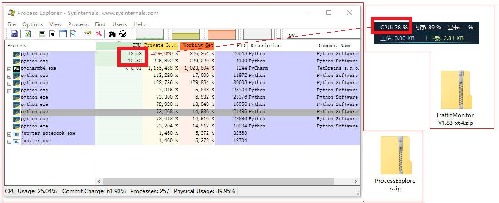
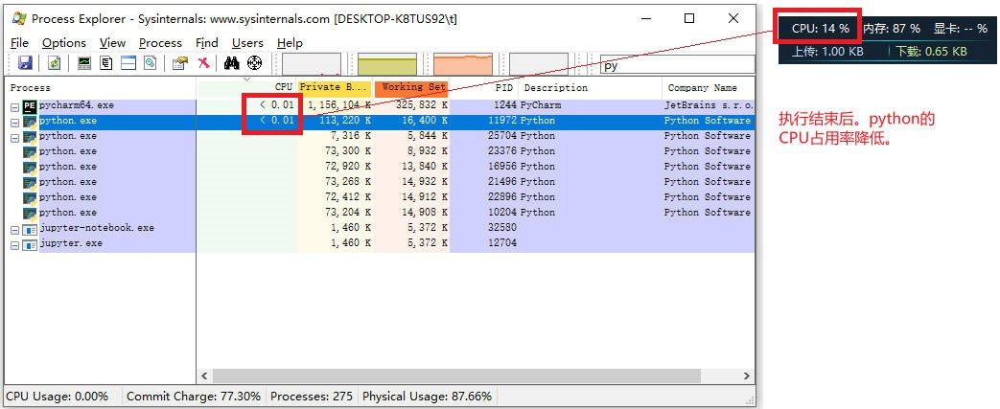

问题：之前将一天的数据以小时（hour）为单位，划分了24个子集合。后来发现单个处理非常耗时，一旦有了新的想处理的字段，就需要再手动执行非常麻烦。
解决方法1：使用线程解决，已经在DP04进行了介绍。但是实际处理的时候发现非常难受的是，CPU的占用率并没有提高（也就是说，CPU并没有发挥作用）。后来进行了检查和重写。找到了解决方法2。
解决方法2：使用多进程解决。下面仔细介绍多进程的解决方法。
学习引例1
例（1/2）：程序
from multiprocessing import Process # 多进程的类
import time
import random
def test_fun(name):
# 随机等待1~5秒
time.sleep(random.randrange(1, 5))
print(f"我是{name}子进程！")
if __name__ == '__main__':
process_list = [] # 存放开启的进程
for i in range(3):
# 进程中的参数args表示调用对象的位置参数元组.注意：元组中只有一个元素时结尾要加","逗号
p = Process(target=test_fun, args=(f"son{i+1}",))
p.start()
process_list.append(p)
for i in process_list:
i.join() # 阻塞每个子进程，主进程会等待所有子进程结束再结束主进程
print("主进程结束！")
学习引例（1/2）：执行结果
我是son2子进程！我是son1子进程！
我是son3子进程！
主进程结束！
Process finished with exit code 0
学习引例2
学习引例（2/2）：程序
from multiprocessing import Pool
import time
import os
def long_time_task(name):
print('Run task %s (%s)...' % (name, os.getpid()))
start = time.time()
time.sleep(1)
end = time.time()
print('Task %s runs %0.2f seconds.' % (name, (end - start)))
if __name__ == '__main__':
print('Parent process %s.' % os.getpid())
p = Pool(5)
for i in range(10):
p.apply_async(long_time_task, args=(i,))
print('Waiting for all subprocesses done...')
p.close()
p.join()
print('All subprocesses done.')
学习引例（2/2）：执行结果
Parent process 7912.
Waiting for all subprocesses done...
Run task 0 (25128)...
Run task 1 (10224)...
Run task 2 (15816)...
Run task 3 (28064)...
Run task 4 (19852)...
Task 0 runs 1.00 seconds.Task 2 runs 1.00 seconds.Task 1 runs 1.00 seconds.
Run task 5 (25128)...
Run task 6 (10224)...
Run task 7 (15816)...
Task 4 runs 1.01 seconds.Task 3 runs 1.01 seconds.
Run task 8 (28064)...
Run task 9 (19852)...
Task 5 runs 1.01 seconds.
Task 7 runs 1.01 seconds.
Task 6 runs 1.01 seconds.
Task 9 runs 1.01 seconds.Task 8 runs 1.01 seconds.
All subprocesses done.
Process finished with exit code 0
下面具体应用到我们的程序上
程序1.1
处理col8, col9两个子集。
注意关注2个子集的耗时
开始时间：2022-08-28 17:26:50
结束时间：2022-08-28 18:09:18
总耗时：Time consuming(s): 2547.71核心代码强调
from multiprocessing import Process
p = Process(target=filterSentences, args=('col' + post, targetDB, colPackages[i], fields))
from multiprocessing import Process # 多进程的类
import time
import pymongo
import jieba
import jieba.analyse # 导入jieba的analyse模块
import jieba.posseg as pseg # 词性标注
import re
def filterSentences(curCol, targetDB, targetCol, fields):
loc = locals()
db = pymongo.MongoClient("localhost:27017", serverSelectionTimeoutMS=10000)
exec(targetDB + " = db['" + targetDB + "']")
print(targetDB + ": 已连接！")
exec("colNames = " + targetDB + ".list_collection_names()")
print(loc['colNames'])
print(f"我是{curCol}子进程！")
# 提取/过滤（网址、话题、用户名）
patternLink = re.compile(r'((http|https|ftp|ftps):\/\/)?([a-zA-Z0-9-]+\.){1,5}(com|cn|net|org|hk|tw)((\/(\w|-)+(\.([a-zA-Z]+))?)+)?(\/)?(\??([\.%:a-zA-Z0-9_-]+=[#\.%:a-zA-Z0-9_-]+(&)?)+)?')
patternTopic = re.compile(r"\#(.+?)\#")
patternUsers = re.compile(r'@([\u4e00-\u9fa5\w\-]+)')
exec(targetCol + " = " + targetDB + "['" + targetCol + "']")
# col_weibo_timePeriod_0 = db_Weibo_SH0331['col_weibo_timePeriod_0']
exec("recs = " + targetCol + ".find()")
for c in loc['recs']:
id = c['_id']
# 操作博文主题/内容 ------------------------------
title = c['title8content']
# 操作博文原始内容 ------------------------------
orgCon = c['orgContent']
plusTxt = title + orgCon
plusTxt = re.sub(patternLink, "", plusTxt) # 去除网址
plusTxt = re.sub(r"\[(.+?)\]", "", plusTxt) # 去除表情
# ================================================================
words = pseg.cut(plusTxt)
personsName_preDup = list()
placesName_preDup = list()
for word, flag in words:
if(flag == 'nr'):
personsName_preDup.append(word)
if(flag == 'ns'):
placesName_preDup.append(word)
personsName = list(set(personsName_preDup))
placesName = list(set(placesName_preDup))
# ---------------------------------------------------------------
# personsName = jieba.analyse.extract_tags(plusTxt,allowPOS=('nr',)) # ●
# placesName = jieba.analyse.extract_tags(plusTxt,allowPOS=('ns',)) # ●
# ================================================================
resTopic = patternTopic.findall(plusTxt) # 提取plusTxt中的话题 # ●
# plusTxt = re.sub(patternTopic, "", plusTxt) # 删除plusTxt中的话题
resUsers = patternUsers.findall(plusTxt) # 提取plusTxt中的用户 # ●
# plusTxt = re.sub(patternUsers, "", plusTxt) # 删除plusTxt中的用户
kWords = jieba.analyse.extract_tags(plusTxt) # ●
f1 = fields[0] # personsName
f2 = fields[1] # placesName
f3 = fields[2] # resTopic
f4 = fields[3] # resUsers
f5 = fields[4] # kWords
# 5 in 1
exec(targetCol + ".update_one({'_id': id}, {'$set': {'" + f1 + "': personsName, '" + f2 + "': placesName, '" + f3 + "': resTopic, '" + f4 + "': resUsers, '" + f5 + "': kWords}})")
if __name__ == '__main__':
targetDB = 'db_Weibo_SH0331'
startTime = time.time()
print(time.strftime('%Y-%m-%d %H:%M:%S', time.localtime(startTime)))
# 开始处理----↓
patternNum = '[0-9]+'
# 循环处理24个集合
subCol24 = list()
subCol24.append(["col_weibo_timePeriod_" + str(period) for period in range(8, 10)])
colPackages = subCol24[0]
fields = ['personsName', 'placesName', 'resTopic', 'resUsers', 'kWords']
process_list = [] # 存放开启的进程
for i in range(0, len(colPackages)):
post = re.search(patternNum, colPackages[i]).group()
# 进程中的参数args表示调用对象的位置参数元组.注意：元组中只有一个元素时结尾要加","逗号
p = Process(target=filterSentences, args=('col' + post, targetDB, colPackages[i], fields))
p.start()
print('------> Thread id : %d' % p.ident) # 进程id
print('------> Thread name : %s' % p.name) # 进程name
process_list.append(p)
for i in process_list:
i.join() # 阻塞每个子进程，主进程会等待所有子进程结束再结束主进程
print("主进程结束！")
# 结束处理----↑
endTime = time.time()
print(time.strftime('%Y-%m-%d %H:%M:%S', time.localtime(endTime)))
print("Time consuming(s): %.2f" % (endTime - startTime))
2022-08-28 17:26:50
------> Thread id : 4100
------> Thread name : Process-1
------> Thread id : 20548
------> Thread name : Process-2
db_Weibo_SH0331: 已连接！
db_Weibo_SH0331: 已连接！
['col_weibo_timePeriod_16', 'col_weibo_timePeriod_23', 'col_weibo_timePeriod_17', 'col_weibo_timePeriod_9', 'col_weibo_timePeriod_18', 'col_weibo_timePeriod_15', 'col_weibo_timePeriod_1', 'col_weibo_timePeriod_13', 'col_weibo_timePeriod_3', 'col_Weibo_SH0331', 'col_weibo_timePeriod_21', 'col_weibo_timePeriod_14', 'col_weibo_timePeriod_20', 'col_weibo_timePeriod_12', 'col_weibo_timePeriod_10', 'col_weibo_timePeriod_22', 'col_weibo_timePeriod_4', 'col_weibo_timePeriod_7', 'col_weibo_timePeriod_19', 'col_weibo_timePeriod_8', 'col_weibo_timePeriod_5', 'col_weibo_timePeriod_2', 'col_weibo_timePeriod_6', 'col_weibo_timePeriod_0', 'col_weibo_timePeriod_11']
我是col8子进程！
Building prefix dict from the default dictionary ...
Loading model from cache C:\Users\t\AppData\Local\Temp\jieba.cache
['col_weibo_timePeriod_16', 'col_weibo_timePeriod_23', 'col_weibo_timePeriod_17', 'col_weibo_timePeriod_9', 'col_weibo_timePeriod_18', 'col_weibo_timePeriod_15', 'col_weibo_timePeriod_1', 'col_weibo_timePeriod_13', 'col_weibo_timePeriod_3', 'col_Weibo_SH0331', 'col_weibo_timePeriod_21', 'col_weibo_timePeriod_14', 'col_weibo_timePeriod_20', 'col_weibo_timePeriod_12', 'col_weibo_timePeriod_10', 'col_weibo_timePeriod_22', 'col_weibo_timePeriod_4', 'col_weibo_timePeriod_7', 'col_weibo_timePeriod_19', 'col_weibo_timePeriod_8', 'col_weibo_timePeriod_5', 'col_weibo_timePeriod_2', 'col_weibo_timePeriod_6', 'col_weibo_timePeriod_0', 'col_weibo_timePeriod_11']
我是col9子进程！
Building prefix dict from the default dictionary ...
Loading model from cache C:\Users\t\AppData\Local\Temp\jieba.cache
Loading model cost 0.840 seconds.
Prefix dict has been built successfully.
Loading model cost 0.825 seconds.
Prefix dict has been built successfully.
主进程结束！
2022-08-28 18:09:18
Time consuming(s): 2547.71
Process finished with exit code 0
多进程&多线程注意要点：
multiprocessing模块不支持交互模式，所以多进程的代码在jupyter notebook中无法运行——jupyter只能跟踪主进程，没法跟踪子进程。必须在 cmd 里头输入 python xxx.py 来运行，才可以看到子进程的执行。python的多线程无法有效利用CPU，例如本文执行的程序，不管开多少个线程，单个python进程对应的CPU占用，一直都是12%上下。而此时我换成了多进程（上述代码是2个进程），python进程对应的CPU占用是24%，i.e., python多进程可以充分利用CPU。
-_-怪不得我一直跑啊跑，就是不见速度上来。
程序1.2
处理col10这1个子集。
注意关注1个子集的耗时
开始时间：2022-08-28 18:16:34
结束时间：2022-08-28 18:40:36
总耗时：Time consuming(s): 1442.52核心代码强调
from multiprocessing import Process
p = Process(target=filterSentences, args=('col' + post, targetDB, colPackages[i], fields))
2022-08-28 18:16:34
------> Thread id : 20448
------> Thread name : Process-1
db_Weibo_SH0331: 已连接！
['col_weibo_timePeriod_16', 'col_weibo_timePeriod_23', 'col_weibo_timePeriod_17', 'col_weibo_timePeriod_9', 'col_weibo_timePeriod_18', 'col_weibo_timePeriod_15', 'col_weibo_timePeriod_1', 'col_weibo_timePeriod_13', 'col_weibo_timePeriod_3', 'col_Weibo_SH0331', 'col_weibo_timePeriod_21', 'col_weibo_timePeriod_14', 'col_weibo_timePeriod_20', 'col_weibo_timePeriod_12', 'col_weibo_timePeriod_10', 'col_weibo_timePeriod_22', 'col_weibo_timePeriod_4', 'col_weibo_timePeriod_7', 'col_weibo_timePeriod_19', 'col_weibo_timePeriod_8', 'col_weibo_timePeriod_5', 'col_weibo_timePeriod_2', 'col_weibo_timePeriod_6', 'col_weibo_timePeriod_0', 'col_weibo_timePeriod_11']
我是col10子进程！
Building prefix dict from the default dictionary ...
Loading model from cache C:\Users\t\AppData\Local\Temp\jieba.cache
Loading model cost 0.705 seconds.
Prefix dict has been built successfully.
主进程结束！
2022-08-28 18:40:36
Time consuming(s): 1442.52
Process finished with exit code 0
程序1.3
处理col11, col12, col13, col14这4个子集。
注意关注4个子集的耗时
开始时间：2022-08-28 18:43:56
结束时间：2022-08-28 19:21:07
总耗时：Time consuming(s): 2230.58核心代码强调
from multiprocessing import Process
p = Process(target=filterSentences, args=('col' + post, targetDB, colPackages[i], fields))
2022-08-28 18:43:56
------> Thread id : 3352
------> Thread name : Process-1
------> Thread id : 6220
------> Thread name : Process-2
------> Thread id : 5580
------> Thread name : Process-3
------> Thread id : 10076
------> Thread name : Process-4
db_Weibo_SH0331: 已连接！db_Weibo_SH0331: 已连接！
db_Weibo_SH0331: 已连接！
db_Weibo_SH0331: 已连接！
['col_weibo_timePeriod_16', 'col_weibo_timePeriod_23', 'col_weibo_timePeriod_17', 'col_weibo_timePeriod_9', 'col_weibo_timePeriod_18', 'col_weibo_timePeriod_15', 'col_weibo_timePeriod_1', 'col_weibo_timePeriod_13', 'col_weibo_timePeriod_3', 'col_Weibo_SH0331', 'col_weibo_timePeriod_21', 'col_weibo_timePeriod_14', 'col_weibo_timePeriod_20', 'col_weibo_timePeriod_12', 'col_weibo_timePeriod_10', 'col_weibo_timePeriod_22', 'col_weibo_timePeriod_4', 'col_weibo_timePeriod_7', 'col_weibo_timePeriod_19', 'col_weibo_timePeriod_8', 'col_weibo_timePeriod_5', 'col_weibo_timePeriod_2', 'col_weibo_timePeriod_6', 'col_weibo_timePeriod_0', 'col_weibo_timePeriod_11']
我是col14子进程！
['col_weibo_timePeriod_16', 'col_weibo_timePeriod_23', 'col_weibo_timePeriod_17', 'col_weibo_timePeriod_9', 'col_weibo_timePeriod_18', 'col_weibo_timePeriod_15', 'col_weibo_timePeriod_1', 'col_weibo_timePeriod_13', 'col_weibo_timePeriod_3', 'col_Weibo_SH0331', 'col_weibo_timePeriod_21', 'col_weibo_timePeriod_14', 'col_weibo_timePeriod_20', 'col_weibo_timePeriod_12', 'col_weibo_timePeriod_10', 'col_weibo_timePeriod_22', 'col_weibo_timePeriod_4', 'col_weibo_timePeriod_7', 'col_weibo_timePeriod_19', 'col_weibo_timePeriod_8', 'col_weibo_timePeriod_5', 'col_weibo_timePeriod_2', 'col_weibo_timePeriod_6', 'col_weibo_timePeriod_0', 'col_weibo_timePeriod_11']
我是col13子进程！
['col_weibo_timePeriod_16', 'col_weibo_timePeriod_23', 'col_weibo_timePeriod_17', 'col_weibo_timePeriod_9', 'col_weibo_timePeriod_18', 'col_weibo_timePeriod_15', 'col_weibo_timePeriod_1', 'col_weibo_timePeriod_13', 'col_weibo_timePeriod_3', 'col_Weibo_SH0331', 'col_weibo_timePeriod_21', 'col_weibo_timePeriod_14', 'col_weibo_timePeriod_20', 'col_weibo_timePeriod_12', 'col_weibo_timePeriod_10', 'col_weibo_timePeriod_22', 'col_weibo_timePeriod_4', 'col_weibo_timePeriod_7', 'col_weibo_timePeriod_19', 'col_weibo_timePeriod_8', 'col_weibo_timePeriod_5', 'col_weibo_timePeriod_2', 'col_weibo_timePeriod_6', 'col_weibo_timePeriod_0', 'col_weibo_timePeriod_11']
我是col11子进程！
['col_weibo_timePeriod_16', 'col_weibo_timePeriod_23', 'col_weibo_timePeriod_17', 'col_weibo_timePeriod_9', 'col_weibo_timePeriod_18', 'col_weibo_timePeriod_15', 'col_weibo_timePeriod_1', 'col_weibo_timePeriod_13', 'col_weibo_timePeriod_3', 'col_Weibo_SH0331', 'col_weibo_timePeriod_21', 'col_weibo_timePeriod_14', 'col_weibo_timePeriod_20', 'col_weibo_timePeriod_12', 'col_weibo_timePeriod_10', 'col_weibo_timePeriod_22', 'col_weibo_timePeriod_4', 'col_weibo_timePeriod_7', 'col_weibo_timePeriod_19', 'col_weibo_timePeriod_8', 'col_weibo_timePeriod_5', 'col_weibo_timePeriod_2', 'col_weibo_timePeriod_6', 'col_weibo_timePeriod_0', 'col_weibo_timePeriod_11']
我是col12子进程！
Building prefix dict from the default dictionary ...
Loading model from cache C:\Users\t\AppData\Local\Temp\jieba.cache
Building prefix dict from the default dictionary ...
Building prefix dict from the default dictionary ...
Building prefix dict from the default dictionary ...
Loading model from cache C:\Users\t\AppData\Local\Temp\jieba.cache
Loading model from cache C:\Users\t\AppData\Local\Temp\jieba.cache
Loading model from cache C:\Users\t\AppData\Local\Temp\jieba.cache
Loading model cost 0.958 seconds.
Prefix dict has been built successfully.
Loading model cost 0.966 seconds.
Prefix dict has been built successfully.
Loading model cost 0.974 seconds.
Prefix dict has been built successfully.
Loading model cost 1.028 seconds.
Prefix dict has been built successfully.
主进程结束！
2022-08-28 19:21:07
Time consuming(s): 2230.58
Process finished with exit code 0
程序2
与程序1不同的是用了
进程池（Pool）。设置好池内进程数n，一次处理n个程序，如果提前有某个程序结束了，就再入池1个，继续执行直至主程序结束。
处理col15 ~ col23这9个子集。
注意关注9个子集的耗时
开始时间：2022-08-28 19:31:55
结束时间：2022-08-28 20:25:37
总耗时：Time consuming(s): 3221.97核心代码强调
from multiprocessing import Pool
p.apply_async(filterSentences, args=('col' + post, targetDB, colPackages[i], fields))
from multiprocessing import Pool
import time
import pymongo
import jieba
import jieba.analyse # 导入jieba的analyse模块
import jieba.posseg as pseg # 词性标注
import re
import os
def filterSentences(curCol, targetDB, targetCol, fields):
loc = locals()
db = pymongo.MongoClient("localhost:27017", serverSelectionTimeoutMS=10000)
exec(targetDB + " = db['" + targetDB + "']")
print(targetDB + ": 已连接！")
# exec("colNames = " + targetDB + ".list_collection_names()")
# print(loc['colNames'])
print(f"我是{curCol}子进程，我的进程号为{os.getpid()}，我开始执行了...")
# 提取/过滤（网址、话题、用户名）
patternLink = re.compile(r'((http|https|ftp|ftps):\/\/)?([a-zA-Z0-9-]+\.){1,5}(com|cn|net|org|hk|tw)((\/(\w|-)+(\.([a-zA-Z]+))?)+)?(\/)?(\??([\.%:a-zA-Z0-9_-]+=[#\.%:a-zA-Z0-9_-]+(&)?)+)?')
patternTopic = re.compile(r"\#(.+?)\#")
patternUsers = re.compile(r'@([\u4e00-\u9fa5\w\-]+)')
exec(targetCol + " = " + targetDB + "['" + targetCol + "']")
# col_weibo_timePeriod_0 = db_Weibo_SH0331['col_weibo_timePeriod_0']
exec("recs = " + targetCol + ".find()")
for c in loc['recs']:
id = c['_id']
# 操作博文主题/内容 ------------------------------
title = c['title8content']
# 操作博文原始内容 ------------------------------
orgCon = c['orgContent']
plusTxt = title + orgCon
plusTxt = re.sub(patternLink, "", plusTxt) # 去除网址
plusTxt = re.sub(r"\[(.+?)\]", "", plusTxt) # 去除表情
# ================================================================
words = pseg.cut(plusTxt)
personsName_preDup = list()
placesName_preDup = list()
for word, flag in words:
if(flag == 'nr'):
personsName_preDup.append(word)
if(flag == 'ns'):
placesName_preDup.append(word)
personsName = list(set(personsName_preDup))
placesName = list(set(placesName_preDup))
# ---------------------------------------------------------------
# personsName = jieba.analyse.extract_tags(plusTxt,allowPOS=('nr',)) # ●
# placesName = jieba.analyse.extract_tags(plusTxt,allowPOS=('ns',)) # ●
# ================================================================
resTopic = patternTopic.findall(plusTxt) # 提取plusTxt中的话题 # ●
# plusTxt = re.sub(patternTopic, "", plusTxt) # 删除plusTxt中的话题
resUsers = patternUsers.findall(plusTxt) # 提取plusTxt中的用户 # ●
# plusTxt = re.sub(patternUsers, "", plusTxt) # 删除plusTxt中的用户
kWords = jieba.analyse.extract_tags(plusTxt) # ●
f1 = fields[0] # personsName
f2 = fields[1] # placesName
f3 = fields[2] # resTopic
f4 = fields[3] # resUsers
f5 = fields[4] # kWords
# 5 in 1
exec(targetCol + ".update_one({'_id': id}, {'$set': {'" + f1 + "': personsName, '" + f2 + "': placesName, '" + f3 + "': resTopic, '" + f4 + "': resUsers, '" + f5 + "': kWords}})")
print(f"我是{curCol}子进程，我执行完了！")
if __name__ == '__main__':
targetDB = 'db_Weibo_SH0331'
startTime = time.time()
print(time.strftime('%Y-%m-%d %H:%M:%S', time.localtime(startTime)))
# 开始处理----↓
patternNum = '[0-9]+'
# 循环处理24个集合
subCol24 = list()
subCol24.append(["col_weibo_timePeriod_" + str(period) for period in range(15, 24)])
colPackages = subCol24[0]
fields = ['personsName', 'placesName', 'resTopic', 'resUsers', 'kWords']
p = Pool(4)
for i in range(0, len(colPackages)):
post = re.search(patternNum, colPackages[i]).group()
p.apply_async(filterSentences, args=('col' + post, targetDB, colPackages[i], fields))
print('Waiting for all subprocesses done...')
p.close()
p.join()
'''
process_list = [] # 存放开启的进程
for i in range(0, len(colPackages)):
post = re.search(patternNum, colPackages[i]).group()
# 进程中的参数args表示调用对象的位置参数元组.注意：元组中只有一个元素时结尾要加","逗号
p = Process(target=filterSentences, args=('col' + post, targetDB, colPackages[i], fields))
p.start()
print('------> Thread id : %d' % p.ident) # 进程id
print('------> Thread name : %s' % p.name) # 进程name
process_list.append(p)
for i in process_list:
i.join() # 阻塞每个子进程，主进程会等待所有子进程结束再结束主进程
'''
print("主进程结束！")
# 结束处理----↑
endTime = time.time()
print(time.strftime('%Y-%m-%d %H:%M:%S', time.localtime(endTime)))
print("Time consuming(s): %.2f" % (endTime - startTime))
2022-08-28 19:31:55
Waiting for all subprocesses done...
db_Weibo_SH0331: 已连接！db_Weibo_SH0331: 已连接！
我是col15子进程，我的进程号为21764，我开始执行了...
db_Weibo_SH0331: 已连接！我是col18子进程，我的进程号为11788，我开始执行了...
我是col17子进程，我的进程号为2264，我开始执行了...
db_Weibo_SH0331: 已连接！
我是col16子进程，我的进程号为21708，我开始执行了...
Building prefix dict from the default dictionary ...
Loading model from cache C:\Users\t\AppData\Local\Temp\jieba.cache
Building prefix dict from the default dictionary ...
Building prefix dict from the default dictionary ...
Loading model from cache C:\Users\t\AppData\Local\Temp\jieba.cache
Loading model from cache C:\Users\t\AppData\Local\Temp\jieba.cache
Building prefix dict from the default dictionary ...
Loading model from cache C:\Users\t\AppData\Local\Temp\jieba.cache
Loading model cost 1.599 seconds.
Prefix dict has been built successfully.
Loading model cost 1.608 seconds.
Prefix dict has been built successfully.
Loading model cost 1.625 seconds.
Prefix dict has been built successfully.
Loading model cost 1.645 seconds.
Prefix dict has been built successfully.
我是col18子进程，我执行完了！
db_Weibo_SH0331: 已连接！
我是col19子进程，我的进程号为11788，我开始执行了...
我是col17子进程，我执行完了！
db_Weibo_SH0331: 已连接！
我是col20子进程，我的进程号为2264，我开始执行了...
我是col15子进程，我执行完了！
db_Weibo_SH0331: 已连接！
我是col21子进程，我的进程号为21764，我开始执行了...
我是col16子进程，我执行完了！
db_Weibo_SH0331: 已连接！
我是col22子进程，我的进程号为21708，我开始执行了...
我是col19子进程，我执行完了！
db_Weibo_SH0331: 已连接！
我是col23子进程，我的进程号为11788，我开始执行了...
我是col21子进程，我执行完了！
我是col20子进程，我执行完了！
我是col22子进程，我执行完了！
我是col23子进程，我执行完了！
主进程结束！
2022-08-28 20:25:37
Time consuming(s): 3221.97
Process finished with exit code 0
附录工具
怎样查看自己电脑的CPU占用情况呢？
两个工具提供
示例使用方法：
 